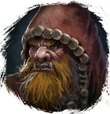

Открыть в интерактивной вики →
| Уровень | 69 |
|---|---|
| Сила (PvE) | 1547 |
| Аспект арены | Velhar |
| Здоровье | 4500 |
| Мана | 1600 |
| Выносливость | 1600 |
Дроп


Статистика

Уровень: 69
Здоровье: 4 500
Мана: 1 600
Выносливость: 1 600
Умения
| Обычная атака | Шар энергии | Групповое Лечение Лечение Рой ос |
Иммунитеты / особые умения
-
Команда

Локация
Медвежья пещера